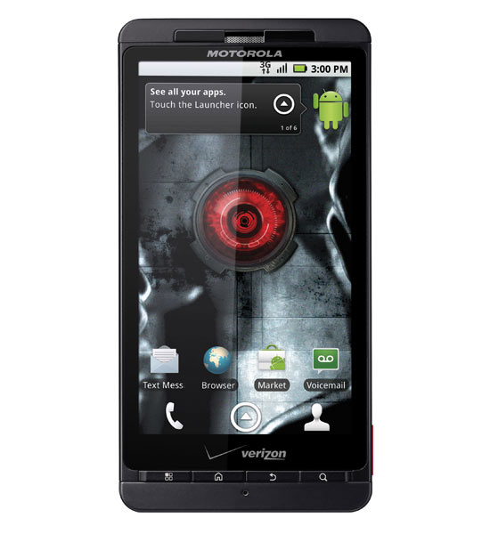
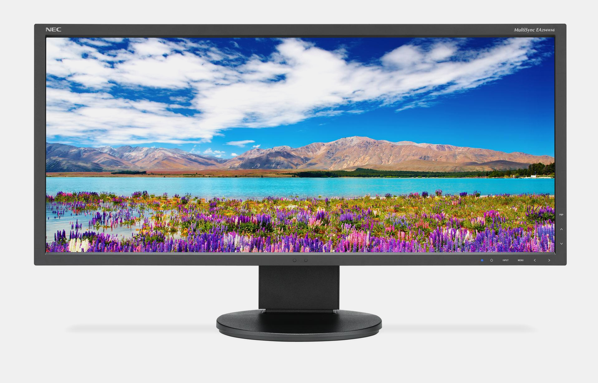

Responsive Web Design Introduction
Responsive web design (RWD) is a web design approach aimed at crafting sites to provide an optimal viewing experience—easy reading and navigation with a minimum of resizing, panning, and scrolling—across a wide range of devices (from mobile phones to desktop computer monitors).[1][2][3]
A site designed with RWD[1][4] adapts the layout to the viewing environment by using fluid, proportion-based grids,[5] flexible images,[6][7][8][9] and CSS3 media queries,[3][10][11] an extension of the @media rule.[12]
The fluid grid concept calls for page element sizing to be in relative units like percentages, rather than absolute units like pixels or points.[5]
Flexible images are also sized in relative units, so as to prevent them from displaying outside their containing element.[6]
Media queries allow the page to use different CSS style rules based on characteristics of the device the site is being displayed on, most commonly the width of the browser.
Server-side components (RESS) in conjunction with client-side ones such as media queries can produce faster-loading sites for access over cellular networks and also deliver richer functionality/usability avoiding some of the pitfalls of device-side-only solutions.[13]
Challenges
Luke Wroblewski has summarized some of the RWD and mobile design challenges, and created a catalog of multi-device layout patterns.[21][22][23] He suggests that, compared with a simple RWD approach, device experience or RESS (responsive web design with server-side components) approaches can provide a user experience that is better optimized for mobile devices.[24][25][26] Server-side "dynamic CSS" implementation of stylesheet languages like Sass or Incentivated's MML can be part of such an approach by accessing a server based API which handles the device (typically mobile handset) differences in conjunction with a device capabilities database in order to improve usability.[27] RESS is more expensive to develop of course, requiring more than just client-side logic, and so tends to be reserved for organisations with larger budgets.
One problem for RWD is that banner advertisements and videos are not fluid.[28] However search advertising and (banner) display advertising support specific device platform targeting and different advertisement size formats for desktop, smartphone, and basic mobile devices. Different landing page URLs can be used for different platforms,[29] or Ajax can be used to display different advertisement variants on a page.[18][22][30]
There are now many ways of validating and testing RWD designs,[31] ranging from mobile site validators and mobile emulators[32] to simultaneous testing tools like Adobe Edge Inspect.[33] The Firefox browser and the Chrome console offer responsive design viewport resizing tools, as do third parties.[34][35]
History
Ethan Marcotte coined the term responsive web design (RWD) in a May 2010 article in A List Apart.[1] He described the theory and practice of responsive web design in his brief 2011 book titled Responsive Web Design. Responsive design was listed as #2 in Top Web Design Trends for 2012 by .net magazine[36] after progressive enhancement at #1. They also listed 20 of Ethan Marcotte's favourite responsive sites.[2]
Mashable called 2013 the Year of Responsive Web Design.[37] Many other sources have recommended responsive design as a cost-effective alternative to mobile applications.[38]
Forbes explains why you need to prioritize responsive design right now.[39]
In late 2012, Google recommended responsive design in its Webmaster’s Guide: “Google recommends webmasters follow the industry best practice of using responsive web design, namely serving the same HTML for all devices and using only CSS media queries to decide the rendering on each device.” [40]
See Also
Text Here


